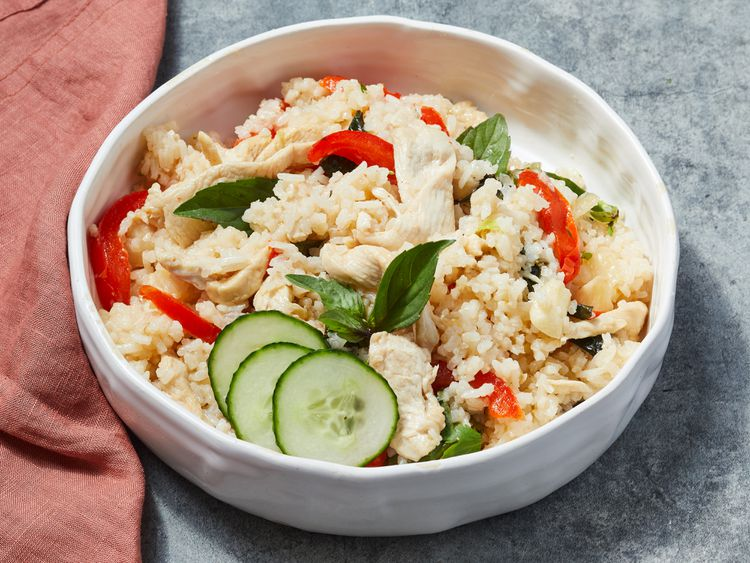

Thai Basil Chicken Fried Rice

About the Dish
Basil Chicken Fried Rice is a classic Thai dish combining the rich, aromatic flavors of stir-fried rice with the savory essence of chicken, all elevated by the unique taste of Thai basil. Known for its balance of bold and comforting flavors, this dish offers a satisfying blend of spice, aroma, and texture, making it a favorite in Thai cuisine
Ingredients
- 3 tablespoons oyster sauce
- 2 tablespoons fish sauce
- 1 teaspoon white sugar
- ½ cup peanut oil for frying
- 6 large cloves garlic clove, crushed
- 2 serrano peppers, crushed
- 1 pound boneless, skinless chicken breast, cut into thin strips
- 1 red bell pepper, thinly sliced
- 1 onion, thinly sliced
- 4 cups cooked jasmine rice, chilled
- 2 cups sweet Thai basil
- 1 cucumber, sliced (Optional)
- ½ cup cilantro sprigs (Optional)
Steps
- Gather all ingredients.
- Whisk together oyster sauce, fish sauce, and sugar in a small bowl; set aside.
- Heat oil in a wok over medium-high heat until oil begins to smoke. Add garlic and Serrano peppers, stirring quickly.
- Stir in chicken, bell pepper, onion, and oyster sauce mixture; cook until chicken is no longer pink in the center and the juices run clear.
- Increase heat to high and stir in chilled rice; stir quickly until sauce is well blended with rice. Use the back of a spoon to break up any rice sticking together.
- Remove the wok from heat. Stir in basil leaves. Garnish with sliced cucumber and cilantro.